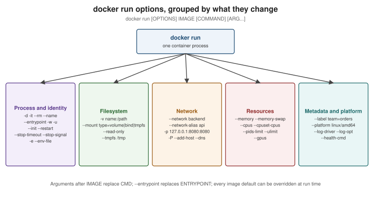

Running Containers
|
This content was generated with the assistance of AI and should be verified against the official documentation before being relied on in production. |
Running containers is where both 2015 books spend most of their pages (Docker: Up & Running chapters 5 and 6,
Learning Docker chapter 2), and the narrative still holds: a container is a process started from an image, with
its own lifecycle, configuration and state. This page rewrites that material against Docker Engine 29.8.x: the
lifecycle, the docker run options you use daily, the commands that operate on running containers, and how
signals and exit codes decide whether an application shuts down cleanly.
The container lifecycle
-
docker createprepares the container (writable layer, configuration, network endpoint) without starting it;docker startruns its process;docker rundoes both and, unless-dis given, attaches to its output. -
docker stopsends the stop signal (SIGTERMunless the image setsSTOPSIGNAL), waits for the stop timeout (10 seconds by default), then sendsSIGKILL.docker killsendsSIGKILL(or--signal) immediately. -
docker pausefreezes every process in the container with the cgroup freezer; nothing receives a signal. -
An exited container keeps its writable layer, logs and configuration until
docker rm.--rmremoves it automatically when it exits.
Derived from Running containers and
docker container.
docker run and its most-used options

| Option | Meaning |
|---|---|
|
Run in the background and print the container ID. |
|
Allocate a pseudo-TTY and keep STDIN open — for interactive shells. |
|
Remove the container when it exits. |
|
A fixed name (otherwise Docker generates one). Names are unique per host and resolvable by DNS on user-defined networks. |
|
Environment variables; |
|
Publish container ports on the host (see Networking); |
|
Volumes, bind mounts and tmpfs (see Storage). |
|
Attach to a network instead of the default bridge. |
|
Override the working directory and the user. |
|
Replace the image’s |
|
Run a tiny init process ( |
|
Restart policy (see below). |
|
How long |
|
Metadata for filtering ( |
|
Run a specific platform variant (emulated if it does not match the host). |
|
Resource limits (see Resources, Logging and Monitoring). |
docker network create backend
docker run -d --name orders-db --network backend \
-e POSTGRES_PASSWORD=dev-only-password -e POSTGRES_DB=orders \
-v orders-db-data:/var/lib/postgresql \
--restart unless-stopped postgres:18.1
docker run --rm -it --network backend postgres:18.1 psql -h orders-db -U postgres -d ordersDerived from docker container run and the
postgres image documentation. The password is a development-only placeholder;
real credentials never go on a command line, where shell history and docker inspect both keep them.
Overriding image defaults
Everything the image configures is a default the run command can override: CMD (arguments after the image
name), ENTRYPOINT (--entrypoint), environment (-e), user (-u), working directory (-w), exposed ports
(-p/--expose), health check (--health-cmd, --no-healthcheck) and stop signal (--stop-signal).
docker run --rm eclipse-temurin:25-jre java -version # replaces CMD
docker run --rm --entrypoint /bin/sh eclipse-temurin:25-jre -c 'id && pwd' # replaces ENTRYPOINT
docker run --rm -e JAVA_TOOL_OPTIONS=-XX:MaxRAMPercentage=75 orders-service:1.4.0Derived from Overriding container defaults.
Working with running containers
docker ps # running containers; -a includes exited ones
docker ps --format 'table {{.Names}}\t{{.Status}}\t{{.Ports}}'
docker exec -it orders-db psql -U postgres # run another process inside the container
docker logs -f --since 10m orders-db # follow the container's stdout/stderr
docker inspect orders-db # full JSON: config, state, mounts, networks
docker inspect --format '{{.State.Status}} {{.State.ExitCode}}' orders-db
docker top orders-db # processes in the container, as seen from the host
docker stats --no-stream # CPU, memory, network, block I/O per container
docker cp orders-db:/var/lib/postgresql/18/docker/postgresql.conf ./ # copy files out (or in)
docker attach orders-db # attach to PID 1's stdio (detach with Ctrl-P Ctrl-Q when -it)
docker port orders-db # published port mappings
docker update --memory 1g --memory-swap 1g orders-db # change limits of a running container
docker wait orders-db # block until it exits, print the exit codeDerived from docker container and its ls, exec,
logs, inspect, top, stats, cp, attach, port, update and wait sub-pages. docker exec is the
modern answer to the nsenter workflow both books describe for getting inside a container; for images without a
shell, see docker debug on Debugging Containers.
Signals, exit codes and graceful shutdown
The container’s main process is PID 1 inside its PID namespace, and PID 1 is special on Linux: the kernel does
not apply default signal handlers to it, so a SIGTERM that the process does not explicitly handle is ignored.
Combined with Docker’s stop sequence — SIGTERM, wait --stop-timeout, then SIGKILL — this produces the
classic symptom of a container that always takes exactly 10 seconds to stop and then dies with exit code 137.
What to do:
-
Start the application directly, in exec form.
ENTRYPOINT ["java", "-jar", "/app/app.jar"]makes the JVM PID 1; the JVM handlesSIGTERMand runs its shutdown hooks. A shell-form entrypoint or a wrapper script makes/bin/shPID 1 instead, and the signal never reaches Java. A wrapper script must end withexec java …. -
Use
--init(or tini in the image) when the process does not handle signals or spawns children it does not reap. -
Give the application time. Spring Boot’s graceful shutdown (
server.shutdown=graceful, the default since Spring Boot 3.4) finishes in-flight requests withinspring.lifecycle.timeout-per-shutdown-phase(30 seconds by default); make--stop-timeout(or Compose’sstop_grace_period) longer than that.
Exit codes tell you how a container ended:
| Exit code | Meaning |
|---|---|
|
The process exited normally. |
|
The application reported an error. |
|
|
|
The command could not be invoked (permission problem, not executable). |
|
The command was not found. |
|
Killed by signal |
time docker stop orders # ~10 s means SIGTERM was ignored and SIGKILL followed
docker inspect --format '{{.State.ExitCode}} OOMKilled={{.State.OOMKilled}}' ordersDerived from --init,
docker container stop and
Exit status.
Restart policies and process managers
Docker can restart a container when its process exits:
| Policy | Behaviour |
|---|---|
|
Never restart. |
|
Restart only on a non-zero exit code, optionally a limited number of times. |
|
Always restart, including when the daemon starts; a manual |
|
Like |
Restarts back off exponentially (starting at 100 ms) and a container must run for at least 10 seconds for the policy to count it as started. Use restart policies for single-host services instead of systemd units or supervisor scripts per container. Derived from Start containers automatically.
One process per container
The recommendation both books already made stands: one concern per container, one main process, with the
container’s lifecycle equal to that process’s lifecycle. Logs, health, restarts, scaling and resource limits are
then all per concern. A supervisor inside a container (supervisord, s6) is acceptable for tightly coupled
helpers, but it hides failures from Docker and must be configured to exit when a critical child dies. See
Run multiple processes in a container.
Cleaning up
docker container prune # remove all stopped containers
docker container prune --filter until=24h
docker rm -f $(docker ps -aq --filter label=purpose=scratch)
docker system prune # stopped containers, unused networks, dangling images, build cache
docker system df # what is using disk spaceDerived from Prune unused Docker objects.